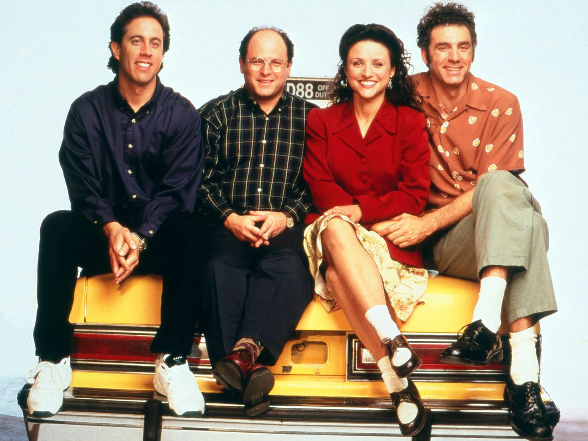
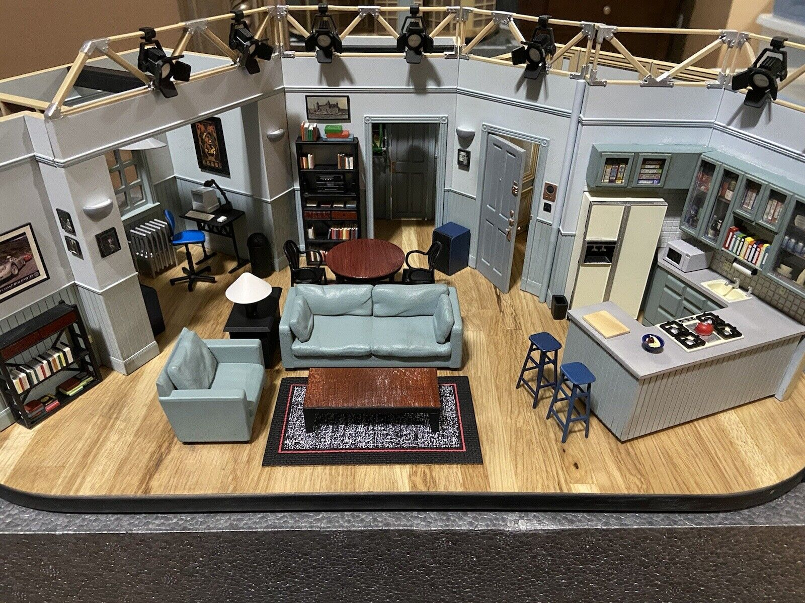

It First Aired in 1989
Seinfeld first appeared on TV in 1989 and became very popular in the 1990s.
Seinfeld is one of the most famous sitcoms of all time. Here are a few fun facts about the show.
Seinfeld first appeared on TV in 1989 and became very popular in the 1990s.

The show focused on everyday life, small problems, and funny conversations.

Many important scenes happened in Jerry’s apartment, which became a famous TV set.